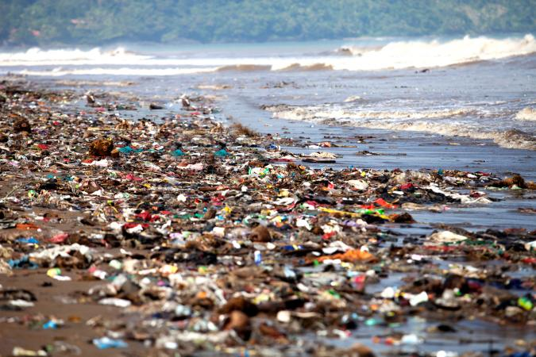
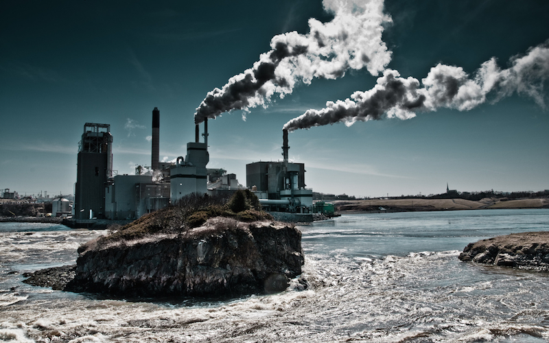

What is WATER Pollution?
Water they say is life, and indeed they were right. With about 70% of the earth’s cover being water,
it undeniably becomes one of our greatest resources. As young students, we learned about the various ways to conserve water;
coming to think of it, water is used in almost every important human chores and processes. It is an important element in both
domestic as well as industrial purposes. However a closer inspection of our water resources today, give us a rude shock.Water
pollution is an appalling problem, powerful enough to lead the world on a path of destruction. Water is an easy solvent, enabling
most pollutants to dissolve in it easily and contaminate it. The most basic effect of water pollution is directly suffered by the
organisms and vegetation that survive in water, including amphibians. On a human level, several people die each day due to
consumption of polluted and infected water.



______________________________________________________________________________________________________________________________________________________________
Causes of Water Pollution
1. Industrial waste:Industries produce huge amount of waste
which contains toxic chemicals and pollutants which can cause air pollution and damage to us and our environment. They contain
pollutants such as lead, mercury, sulphur, asbestos, nitrates and many other harmful chemicals. Many industries do not have proper
waste management system and drain the waste in the fresh water which goes into rivers, canals and later in to sea.
2. Sewage and waste water:The sewage and waste water that is
produced by each household is chemically treated and released in to sea with fresh water. The sewage water carries harmful bacteria
and chemicals that can cause serious health problems. Pathogens are known as a common water pollutant; The sewers of cities house
several pathogens and thereby diseases.
3. Mining activities:Mining is the process of crushing the rock
and extracting coal and other minerals from underground. These elements when extracted in the raw form contains harmful chemicals
and can increase the amount of toxic elements when mixed up with water which may result in health problems.
4. Marine dumping:The garbage produce by each household in the form
of paper, aluminum, rubber, glass, plastic, food if collected and deposited into the sea in some countries. These items take from 2 weeks
to 200 years to decompose. When such items enters the sea, they not only cause water pollution but also harm animals in the sea.
5. Accidental Oil leakage:Oil spill pose a huge concern as large amount
of oil enters into the sea and does not dissolve with water; there by opens problem for local marine wildlife such as fish, birds and sea otters, etc.
______________________________________________________________________________________________________________________________________________________________
Effects of Water Pollution
1. Diseases:In humans, drinking or consuming polluted water in any way has many
disastrous effects on our health. It causes typhoid, cholera, hepatitis and various other diseases.
2. Destruction of Ecosystems:Ecosystems are extremely dynamic and respond to
even small changes in the environment. Water pollution can cause an entire ecosystem to collapse if left unchecked.
3. Eutrophication:Chemicals in a water body, encourage the growth of algae.
These algae form a layer on top of the pond or lake. Bacteria feed on this algae and this decreases the amount of oxygen in the water body,
severely affecting the aquatic life there.
4. Effects the food chain:Disruption in food chains happens when toxins and
pollutants in the water are consumed by aquatic animals (fish, shellfish etc) which are then consumed by humans etc.
______________________________________________________________________________________________________________________________________________________________
Solutions of Water Pollution
While there is no single short step to stop water pollution, there are number of things that we can do in our daily lifestyle to reduce water pollution.
The best way to clean the polluted water is not to clean the polluted water but to stop polluting. Here we have compiled a list of 25 such ways that can help you to reduce water
pollution and make it safe for animals, unique. organisms and ecosystems that are being harmed and going extinct at an alarming rate.Lets have a look at some easy and simple ways that you can do to
reduce the water pollution going on today.
- Use Less Plastic.
- Reuse Items.
- Recyclable Options.
- Do Not Dispose Oils in the Sink.
- Cleaning Chemicals.
- Do not Throw Away Medicines.
- Household Items.
- Garbage Disposal, etc.
Go To Main Page